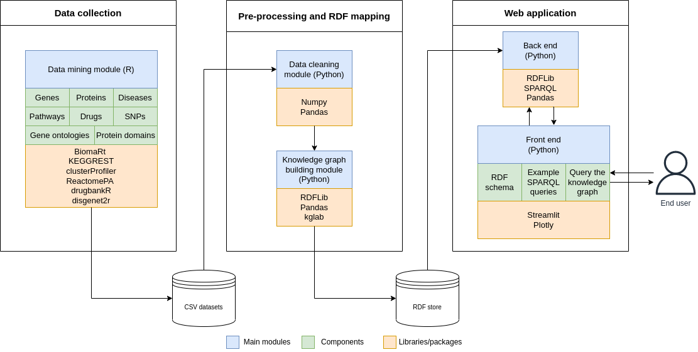

NTDs2RDF


A heterogeneous and integrated knowledge graph for the exploration of neglected tropical diseases
Table of contents:
About the project
Neglected tropical diseases (NTDs) are a heterogeneous group of 20 bacterial, viral, parasitic, and fungal conditions that generally occur in developing tropical countries in the Americas, Africa, and Asia. NTDs mainly affect poor populations that do not have access to safe water, sanitation, and high-quality healthcare. Because of the severe effects of NTDs (i.e., they can cause long-lasting disabilities), they reinforce the cycle of poverty in vulnerable communities.
Currently, there are several independent databases that contain information about proteins, metabolic pathways, and drugs involved in NTDs, but no integrated databases with all the information. This unified resource could enable the systematic exploration of all the components of the NTDs, contributing to the research of potential therapies for these diseases.
The NTDs2RDF project aimed to create a knowledge graph (KG) of genes, proteins, metabolic pathways, gene ontologies, single nucleotide variants, drugs, and other relevant data for three NTDs (Chagas disease, leishmaniasis, and African trypanosomiasis), integrating all the information in a single data structure that can be explored through a query interface implemented with a Streamlit web application. This software provides a user-friendly platform to extract information from the KG using SPARQL queries.
The project represents an initial step towards the creation of a heterogeneous database for different NTDs with several potential applications in advancing the understanding of NTDs biology and providing insights that cannot be obtained through alternative resources.


The schematic representation of the knowledge graph is presented in one of the pages of the web app. The software architecture of the web app and the previous steps are shown below:

How to run the web app locally?
I used Pipenv to create a Python virtual environment, which allows the management of python libraries and their dependencies. Each Pipenv virtual environment has a Pipfile with the names and versions of libraries installed in the virtual environment, and a Pipfile.lock, a JSON file that contains versions of libraries and their dependencies.
To create a Python virtual environment with libraries and dependencies required for this project, you should clone this GitHub repository, open a terminal, move to the folder containing this repository, and run the following commands:
# Install pipenv
$ pip install pipenv
# Create the Python virtual environment
$ pipenv install
# Activate the Python virtual environment
$ pipenv shellYou can find a detailed guide on how to use pipenv here.
Alternatively, you can create a conda virtual environment with the required libraries using the requirements.txt file.
After installing the libraries, you can run the streamlit app locally with the command below:
$ streamlit run 🏠_Home.pyStructure of the repository
The main files and directories of this repository are:
| File | Description |
|---|---|
| RDF_graph_building.ipynb | Jupyter notebook to integrate the data and create the RDF graph |
| 🏠_Home.py | Script for the home page of the streamlit web application |
| sparql_queries_NTDs_RDF_examples.txt | Examples of SPARQL queries to retrive information from the RDF graph |
| requirements.txt | File with names of the libraries required for the streamlit web application |
| Pipfile | File with names and versions of libraries installed in the virtual environment |
| Pipfile.lock | Json file that contains versions of libraries and their dependencies |
| style.css | css file to customize style features of the web application |
| Data/ | Raw csv files and RDF graph |
| pages/ | Python scripts for the pages of the streamlit web application |
| Data_processing/ | R scripts to collect the data |
| img/ | images and gifs |
Credits
Developed by Sebastián Ayala Ruano. I created this app for a project of a course about knowledge graphs from the MSc in Systems Biology at Maastricht University.
Part of the code for this project was inspired by the Medium blogpost and GitHub repo from Edoardo Bianchi about this topic.
Further details
More details about the data collection, integration, and processing, as well as the creation of the knowledge graph and the web app are available in this pdf report.
Contact

If you have comments or suggestions about this project, you can open an issue in this repository, or email me at sebasar1245@gamil.com.